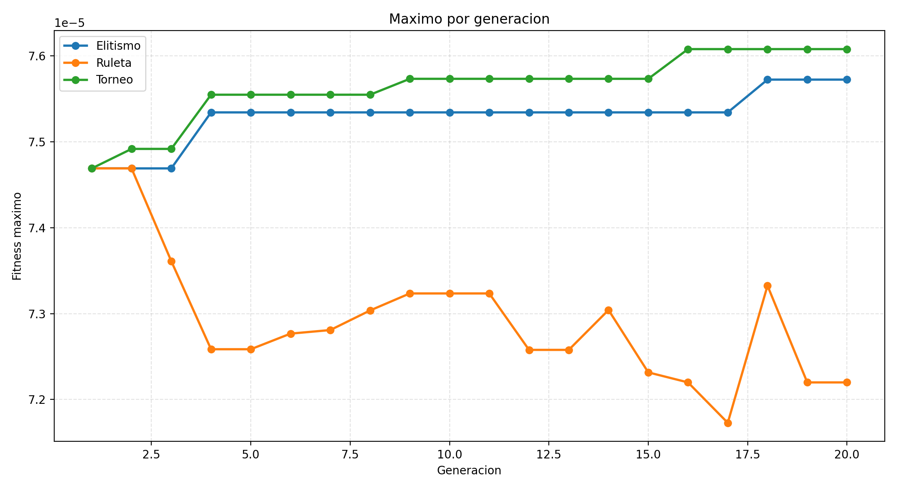
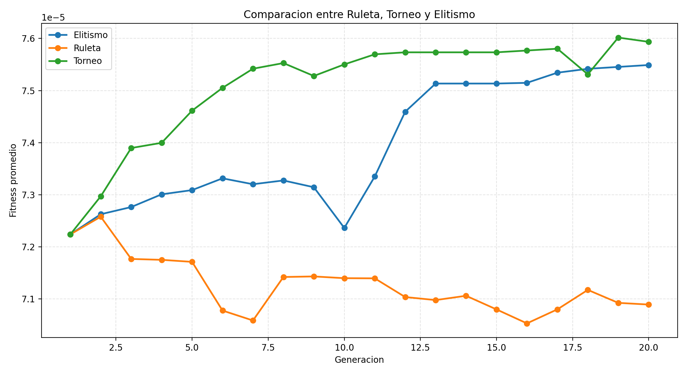
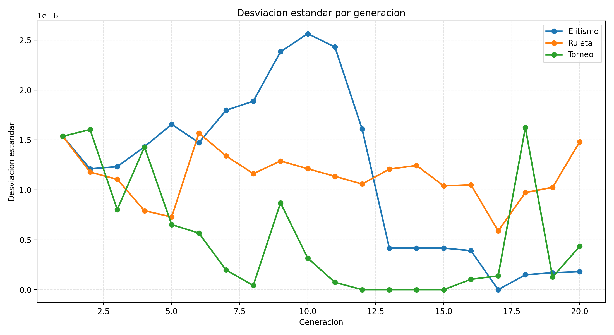
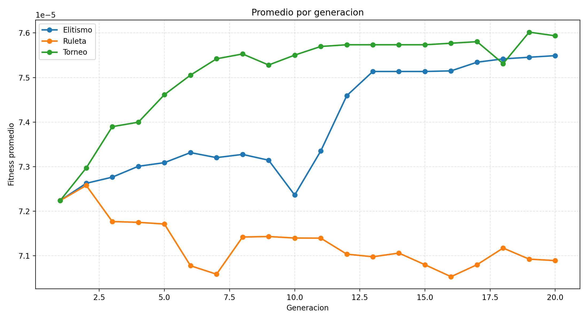
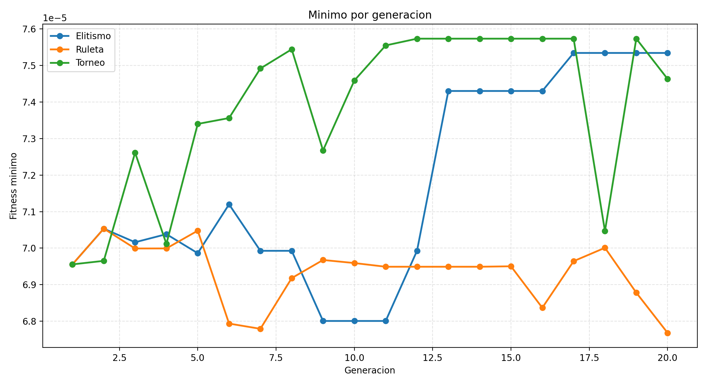

Los puntos 1 (Carátula) y 2 (Índice) corresponden a las secciones anteriores de este documento.
3. Denominación del futuro proyecto de investigación
Optimización mediante Algoritmos Genéticos de la asignación y el balance de carga de alertas de seguridad en Centros de Operaciones de Seguridad (SOC)
Esta denominación delimita con precisión el alcance del proyecto en tres ejes: la técnica a emplear (algoritmos genéticos, dentro de la familia de los algoritmos evolutivos), el problema de optimización combinatoria abordado (asignación de tareas —scheduling— y balance de carga entre recursos humanos limitados) y el dominio de aplicación (la operación de un SOC, entendido como el equipo y la infraestructura responsables de detectar, triar y responder a alertas de seguridad informática).
4. Situación problemática
Los Centros de Operaciones de Seguridad (SOC) son la primera línea de defensa de las organizaciones frente a incidentes de ciberseguridad: reciben, triean y resuelven alertas generadas por sistemas de detección de intrusiones, antivirus, firewalls y plataformas de gestión de eventos (SIEM). La literatura reciente coincide en que el volumen de alertas que procesa un SOC moderno ha crecido a un ritmo muy superior a la disponibilidad de analistas capacitados para atenderlas. Jalalvand et al. (2025) [1] sistematizan decenas de criterios y métodos propuestos en la última década para priorizar alertas, y señalan que la sobrecarga de alertas (alert overload) es uno de los problemas estructurales más persistentes de la operación de un SOC, ya que obliga a los analistas a decidir, con información incompleta y bajo presión de tiempo, qué atender primero.
Esa sobrecarga tiene un correlato humano documentado: la fatiga de alertas (alert fatigue). Tariq et al. (2025) [2] identifican cuatro causas principales de este fenómeno —el volumen de alertas, la proporción de falsos positivos, la falta de contexto en cada alerta y el diseño de las herramientas— y advierten que la fatiga degrada la calidad de las decisiones de triage, incrementa el tiempo de respuesta y favorece la rotación de personal capacitado, lo que a su vez reduce aún más la capacidad operativa disponible. Este ciclo (más alertas, menos analistas efectivos, peores tiempos de respuesta) es especialmente crítico cuando las alertas retrasadas son de alta severidad, dado que la demora en su atención incrementa directamente el riesgo de que una intrusión progrese sin ser contenida.
A esta escasez estructural de analistas se suma un problema de coordinación: aun cuando el equipo de analistas es suficiente en promedio, la forma en que las alertas se reparten entre ellos rara vez es óptima. Las prácticas habituales de asignación —turnos fijos, reglas estáticas por tipo de alerta, o asignación manual según disponibilidad aparente— no consideran de forma simultánea la prioridad de cada alerta, su plazo de resolución comprometido (SLA), el tiempo estimado que insumirá resolverla y la carga ya acumulada por cada analista. El resultado observado en la práctica es un desbalance de carga: algunos analistas acumulan backlog mientras otros permanecen subutilizados, y las alertas críticas no siempre son atendidas por quien está en condiciones de resolverlas dentro del plazo comprometido. Investigaciones sobre priorización adaptativa de alertas exploran, desde el aprendizaje automático, mecanismos que involucran retroalimentación humana para mejorar estas decisiones [3], lo que confirma que la asignación de alertas a analistas es, en esencia, un problema de optimización combinatoria bajo restricciones y no una tarea que pueda resolverse satisfactoriamente con reglas fijas.
Los algoritmos genéticos son una familia de metaheurísticas particularmente adecuada para este tipo de problemas, porque permiten explorar de manera eficiente un espacio de soluciones combinatorio —en este caso, todas las formas posibles de repartir n alertas entre m analistas— sin necesidad de enumerar exhaustivamente las alternativas, algo inviable incluso para instancias moderadas del problema. Su aplicación a problemas de scheduling y balance de carga está ampliamente documentada: existen antecedentes concretos de algoritmos genéticos aplicados a la programación de tareas en entornos de manufactura (problema de Job Shop Scheduling) [4], y al balanceo dinámico de carga entre recursos computacionales en sistemas distribuidos (Luna Rosas, Tristán Ávila y Martínez Pedroza, 2003) [5]. Ambos antecedentes comparten con el problema del SOC la misma estructura de fondo: unidades de trabajo heterogéneas que deben repartirse entre recursos limitados minimizando tiempo total y desbalance, lo que respalda la pertinencia de adaptar un algoritmo genético canónico al dominio de la asignación de alertas en un SOC.
En síntesis, la situación problemática identificada combina tres factores que se retroalimentan: (a) un volumen de alertas que excede la capacidad de análisis manual eficiente, (b) el riesgo de incumplir plazos de atención en alertas críticas cuando la asignación no prioriza correctamente, y (c) la ausencia de mecanismos de asignación que balanceen la carga entre analistas de forma sistemática y verificable. Estos tres factores configuran un escenario donde una técnica de optimización combinatoria como los algoritmos genéticos puede aportar un modelo formal, medible y comparable frente a las heurísticas manuales actualmente en uso.
5. Problema
La asignación manual o basada en reglas fijas de alertas de seguridad a los analistas de un Centro de Operaciones de Seguridad no logra, de manera consistente, minimizar simultáneamente el tiempo total de resolución, el incumplimiento de los plazos de atención (SLA) de las alertas críticas y el desbalance de carga entre analistas, por lo que resulta necesario investigar y modelar mediante Algoritmos Genéticos una estrategia de asignación que, a partir de un conjunto de alertas caracterizadas por su prioridad, severidad, tiempo estimado de resolución y SLA, distribuya dichas alertas entre un número limitado de analistas optimizando de forma conjunta esos objetivos operativos.
6. Objetivos de la investigación
6.a. Objetivo general
Diseñar, implementar y evaluar un modelo de Algoritmo Genético Canónico que optimice la asignación de alertas de seguridad a los analistas de un Centro de Operaciones de Seguridad, minimizando de forma conjunta el tiempo total de resolución, el incumplimiento de los SLA en alertas críticas, el backlog y el desbalance de carga entre analistas.
6.b. Objetivos específicos
- Diseñar una representación cromosómica que codifique una asignación completa de alertas a analistas, donde cada gen indique el analista responsable de resolver la alerta correspondiente.
- Formular una función de fitness multiobjetivo que integre el tiempo total estimado de resolución junto con penalizaciones por espera promedio, espera y retraso de alertas críticas respecto del SLA, backlog acumulado y desbalance de carga, de modo que un fitness mayor represente siempre una asignación operativamente mejor.
- Implementar y comparar, bajo idénticas condiciones iniciales (semilla aleatoria, tamaño de población y número de generaciones), tres operadores de selección de padres —ruleta, torneo y elitismo— a fin de determinar cuál produce el mejor fitness global y la convergencia más estable.
- Registrar y analizar, generación a generación, el fitness máximo, mínimo, promedio y su desvío estándar para cada operador de selección, documentando la velocidad y la estabilidad con la que cada estrategia converge hacia una solución de buena calidad.
- Cuantificar, a partir del mejor cromosoma hallado, la distribución final de alertas y de carga horaria entre los analistas del SOC, verificando el grado de equilibrio efectivamente alcanzado por el modelo.
- Medir el tiempo de ejecución de cada estrategia evolutiva, para poder contrastar la calidad de la solución obtenida por cada operador de selección frente a su costo computacional.
7. Evidencia preliminar del modelo implementado
Esta sección no forma parte de los seis apartados exigidos, pero se incorpora porque el grupo ya cuenta con un prototipo funcional (TPI/main.py) que instrumenta exactamente lo descripto en los objetivos específicos, y sus resultados reales permiten anticipar y justificar con datos concretos varias de las afirmaciones anteriores.
Configuración utilizada
El modelo simula 10 analistas SOC y 500 alertas sintéticas generadas con semilla fija (semilla = 42), sobre un horizonte de trabajo de 8 horas (480 minutos). Cada estrategia evolutiva —ruleta, torneo (k = 3) y elitismo (2 individuos preservados)— se ejecutó con una población de 10 cromosomas durante 20 generaciones, con probabilidad de cruza de un punto del 75 % y probabilidad de mutación invertida del 5 %.
| Método | Mejor fitness global | Tiempo total estimado (min) | Backlog (alertas) | Desbalance de carga | Tiempo de ejecución (s) |
|---|---|---|---|---|---|
| Ruleta | 7,4691 × 10⁻⁵ | 2125 | 364 | 0,1217 | 0,0291 |
| Torneo | 7,6081 × 10⁻⁵ | 1905 | 369 | 0,0397 | 0,0254 |
| Elitismo | 7,5725 × 10⁻⁵ | 2089 | 365 | 0,0929 | 0,0254 |
Fuente: TPI/outputs/resumen_resultados_soc.csv, corrida con semilla 42.
El método Torneo obtuvo el mejor fitness global de las tres estrategias, explicado por una combinación de menor tiempo total estimado (1905 minutos) y el menor desbalance de carga (0,0397, es decir, menos de la mitad que ruleta). Elitismo logró la penalización total más baja de las tres (11.115,6) gracias a que preserva siempre a los dos mejores individuos de cada generación, pero un tiempo total ligeramente mayor lo dejó en segundo lugar. Ruleta, al ser puramente proporcional al fitness y no conservar explícitamente a los mejores individuos, resultó la estrategia menos estable: como puede verse en la Figura 1, su fitness máximo cae abruptamente después de la generación 3 y nunca vuelve a alcanzar el valor hallado en la primera generación, evidenciando que la selección por ruleta, sin elitismo, puede perder al mejor individuo encontrado.
| Analista | Alertas asignadas | Carga total (min) | Alertas críticas | Severidad promedio |
|---|---|---|---|---|
| 1 | 46 | 1799 | 9 | 51,9 |
| 2 | 55 | 1900 | 6 | 47,1 |
| 3 | 48 | 1827 | 8 | 51,0 |
| 4 | 50 | 1871 | 8 | 51,5 |
| 5 | 44 | 1712 | 8 | 51,7 |
| 6 | 46 | 1698 | 7 | 51,2 |
| 7 | 49 | 1784 | 8 | 49,4 |
| 8 | 55 | 1721 | 3 | 43,1 |
| 9 | 57 | 1766 | 7 | 42,5 |
| 10 | 50 | 1682 | 6 | 45,4 |
Fuente: TPI/outputs/distribucion_final_alertas_soc.csv.
La carga total osciló entre 1682 y 1900 minutos (media de 1776 minutos), es decir, una dispersión relativa moderada dado que ningún analista quedó ni ampliamente ocioso ni saturado muy por encima del resto: el objetivo específico 5 se verifica con estos datos reales y no con una expectativa teórica.
Figuras






Estas figuras y tablas no reemplazan el marco teórico ni la concreción del modelo (punto 7 y segunda parte de la guía de cátedra), que quedan fuera del alcance de esta entrega, pero constituyen el avance de programación ya disponible para mostrar durante la clase, ejecutable de punta a punta con:
cd TPI
python3 -m pip install -r requirements.txt
python3 main.py8. Referencias bibliográficas
- Jalalvand, F.; Baruwal Chhetri, M.; Nepal, S.; Paris, C. (2025). «Alert Prioritisation in Security Operations Centres: A Systematic Survey on Criteria and Methods». ACM Computing Surveys, 57(2). https://dl.acm.org/doi/10.1145/3695462
- Tariq, S.; Baruwal Chhetri, M.; Nepal, S.; Paris, C. (2025). «Alert Fatigue in Security Operations Centres: Research Challenges and Opportunities». ACM Computing Surveys, 57(9), art. 224. https://dl.acm.org/doi/10.1145/3723158
- «Adaptive Alert Prioritisation in Security Operations Centres via Learning to Defer with Human Feedback» (2025). arXiv:2506.18462. https://arxiv.org/abs/2506.18462
- «Algoritmo Genético Simple para Resolver el Problema de Programación de la Tienda de Trabajo (Job Shop Scheduling)» (2018). SciELO Chile. https://www.scielo.cl/scielo.php?script=sci_arttext&pid=S0718-07642018000500299
- Luna Rosas, F. J.; Tristán Ávila, R.; Martínez Pedroza, J. de J. (2003). «Aplicando un algoritmo genético para balancear carga dinámicamente en ambientes distribuidos orientados a objetos (CORBA)». ConCiencia Tecnológica, N.º 23. https://dialnet.unirioja.es/servlet/articulo?codigo=6482681